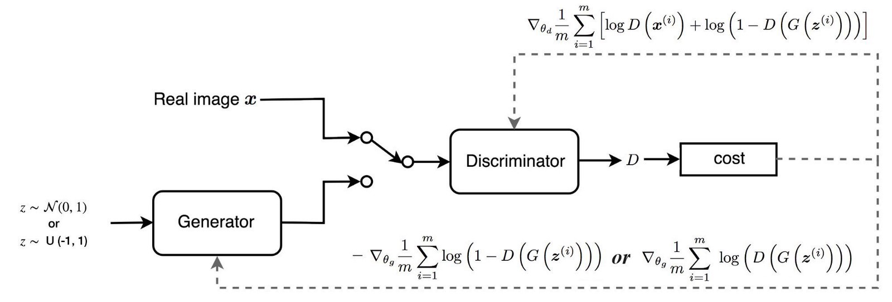

Generative adversarial networks (GANs) are algorithmic architectures that use two neural networks,
pitting one against the other (thus the “adversarial”) in order to generate new, synthetic instances of data that can pass for real data.
They are used widely in image generation, video generation and voice generation.
Generative vs. Discriminative Algorithms
To understand GANs, you should know how generative algorithms work, and for that, contrasting them with discriminative algorithms is instructive.
Discriminative algorithms try to classify input data; that is, given the features of an instance of data, they predict a label or category to which that data belongs.
For example, given all the words in an email (the data instance), a discriminative algorithm could predict whether the message is spam or not_spam. spam is one of the labels,
and the bag of words gathered from the email are the features that constitute the input data. When this problem is expressed mathematically, the label is called y and the features are called x.
The formulation p(y|x) is used to mean “the probability of y given x”, which in this case would translate to “the probability that an email is spam given the words it contains.”
So discriminative algorithms map features to labels.
They are concerned solely with that correlation.
One way to think about generative algorithms is that they do the opposite.
Instead of predicting a label given certain features, they attempt to predict features given a certain label.
The question a generative algorithm tries to answer is: Assuming this email is spam, how likely are these features? While discriminative models care about the relation between y and x, generative models care about “how you get x.”
They allow you to capture p(x|y), the probability of x given y, or the probability of features given a label or category.
(That said, generative algorithms can also be used as classifiers. It just so happens that they can do more than categorize input data.)
How GANs Work
One neural network, called the generator, generates new data instances, while the other, the discriminator, evaluates them for authenticity; i.e. the discriminator decides whether each instance of data that it reviews belongs to the actual training dataset or not.
The goal of the discriminator, when shown an instance from the true dataset, is to recognize those that are authentic.
Meanwhile, the generator is creating new, synthetic images that it passes to the discriminator.
It does so in the hopes that they, too, will be deemed authentic, even though they are fake.
The goal of the generator is to generate passable images: to lie without being caught.
The goal of the discriminator is to identify images coming from the generator as fake.
Here are the steps a GAN takes:
The generator takes in random numbers and returns an image.
This generated image is fed into the discriminator alongside a stream of images taken from the actual, ground-truth dataset.
The discriminator takes in both real and fake images and returns probabilities, a number between 0 and 1, with 1 representing a prediction of authenticity and 0 representing fake.
So you have a double feedback loop:
The discriminator is in a feedback loop with the ground truth of the images, which we know.
The generator is in a feedback loop with the discriminator.
The Discriminator
The discriminator in a GAN is simply a classifier.
It tries to distinguish real data from the data created by the generator.
It could use any network architecture appropriate to the type of data it's classifying.
Discriminator Training Data
The discriminator's training data comes from two sources:
Real data instances, such as real pictures of people.
The discriminator uses these instances as positive examples during training.
Fake data instances created by the generator.
The discriminator uses these instances as negative examples during training.
In Figure, the two "Sample" boxes represent these two data sources feeding into the discriminator.
During discriminator training the generator does not train.
Its weights remain constant while it produces examples for the discriminator to train on.
Training the Discriminator
The discriminator connects to two loss functions.
During discriminator training, the discriminator ignores the generator loss and just uses the discriminator loss.
We use the generator loss during generator
During the discriminator training:
The discriminator classifies both real data and fake data from the generator.
The discriminator loss penalizes the discriminator for misclassifying a real instance as fake or a fake instance as real.
The discriminator updates its weights through backpropagation from the discriminator loss through the discriminator network.
The Generator
The generator part of a GAN learns to create fake data by incorporating feedback from the discriminator.
It learns to make the discriminator classify its output as real.
Generator training requires tighter integration between the generator and the discriminator than discriminator training requires.
The portion of the GAN that trains the generator includes:
random noise input
generator network, which transforms the random input into a data instance
discriminator network, which classifies the generated data
discriminator output
generator loss, which penalizes the generator for failing to fool the discriminator
Random Input
Neural networks need some form of input.
Normally we input data that we want to do something with, like an instance that we want to classify or make a prediction about.
But what do we use as input for a network that outputs entirely new data instances?
In its most basic form, a GAN takes random noise as its input.
The generator then transforms this noise into a meaningful output.
By introducing noise, we can get the GAN to produce a wide variety of data, sampling from different places in the target distribution.
Experiments suggest that the distribution of the noise doesn't matter much, so we can choose something that's easy to sample from, like a uniform distribution.
For convenience the space from which the noise is sampled is usually of smaller dimension than the dimensionality of the output space.
Using the Discriminator to Train the Generator
To train a neural net, we alter the net's weights to reduce the error or loss of its output.
In our GAN, however, the generator is not directly connected to the loss that we're trying to affect.
The generator feeds into the discriminator net, and the discriminator produces the output we're trying to affect.
The generator loss penalizes the generator for producing a sample that the discriminator network classifies as fake.
This extra chunk of network must be included in backpropagation.
Backpropagation adjusts each weight in the right direction by calculating the weight's impact on the output — how the output would change if you changed the weight.
But the impact of a generator weight depends on the impact of the discriminator weights it feeds into.
So backpropagation starts at the output and flows back through the discriminator into the generator.
At the same time, we don't want the discriminator to change during generator training.
Trying to hit a moving target would make a hard problem even harder for the generator.
So we train the generator with the following procedure each generation:
Sample random noise.
Produce generator output from sampled random noise.
Get discriminator "Real" or "Fake" classification for generator output.
Calculate loss from discriminator classification.
Backpropagate through both the discriminator and generator to obtain gradients.
Use gradients to change only the generator weights.
GAN Training
Because a GAN contains two separately trained networks, its training algorithm must address two complications:
GANs must juggle two different kinds of training (generator and discriminator).
GAN convergence is hard to identify.
Alternating Training
The generator and the discriminator have different training processes.
GAN training proceeds in alternating periods:
The discriminator trains for one or more epochs.
The generator trains for one or more epochs.
Repeat steps 1 and 2 to continue to train the generator and discriminator networks.
We keep the generator constant during the discriminator training phase.
As discriminator training tries to figure out how to distinguish real data from fake, it has to learn how to recognize the generator's flaws.
That's a different problem for a thoroughly trained generator than it is for an untrained generator that produces random output.
Similarly, we keep the discriminator constant during the generator training phase.
Otherwise the generator would be trying to hit a moving target and might never converge.
It's this back and forth that allows GANs to tackle otherwise intractable generative problems.
We get a toehold in the difficult generative problem by starting with a much simpler classification problem.
Conversely, if you can't train a classifier to tell the difference between real and generated data even for the initial random generator output, you can't get the GAN training started.

Convergence
As the generator improves with training, the discriminator performance gets worse because the discriminator can't easily tell the difference between real and fake.
If the generator succeeds perfectly, then the discriminator has a 50% accuracy.
In effect, the discriminator flips a coin to make its prediction.
This progression poses a problem for convergence of the GAN as a whole: the discriminator feedback gets less meaningful over time.
If the GAN continues training past the point when the discriminator is giving completely random feedback, then the generator starts to train on junk feedback, and its own quality may collapse.
For a GAN, convergence is often a fleeting, rather than stable, state.